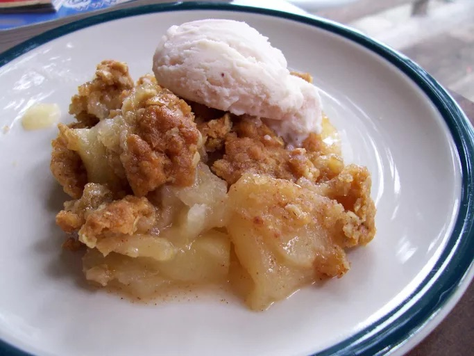

Applecrisp recipe

More recipes
Apple crisp is a warm dessert made with baked, tender apples topped with a sweet, crunchy, and crumbly topping, typically consisting
of flour, oats, sugar, and butter. It is often flavored with cinnamon and nutmeg and is known for its contrasting textures of soft fruit
and a buttery, crispy topping.
Ingredients
- Apples
- Oats
- Brown Sugar
- Cinnamon
- All-purpose flour
- Milk
Directions
- Slice apples into very thin cubes
- In a hot pan, add apples, oats, brown sugar, and cinnamon, and cook down until mushy
- After apples are done, sprinkle a layer of all purpose flour mixed with brown sugar on top
- Place it in an oven and broil for 10 minutes
- Enjoy either by itself, or with yogurt or ice cream